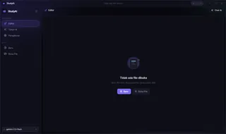
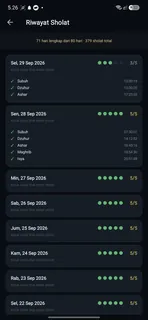

Daftar isi karya
StudyAI
Kubuat StudyAI untuk mengolah catatan kuliah. Aku bisa menulis di editor, meminta ringkasan dari Mai, lalu menyimpan catatannya sebagai Markdown.
Repo GitHub ↗
← Kembali ke daftar isiFoto lainnya
Dari editor ke Markdown
Saat catatan TipTap disimpan ke Markdown, StudyAI menyimpan warna dan sorotan sebagai HTML sebaris agar formatnya ikut terbaca saat berkas dibuka lagi. Chat AI juga bisa memakai bagian catatan yang relevan sebagai konteks.
SholatTracker
Kubuat SholatTracker supaya catatan lima waktu salat mudah dipantau. Aku bisa melihat progres hari ini lewat widget dan membuka riwayat untuk melihat hari-hari sebelumnya.
Repo GitHub ↗
← Kembali ke daftar isiFoto lainnya
Cara pengingat bekerja
Ponsel bisa mati sebelum waktu salat. Karena itu, kubuat pengingatnya terjadwal kembali saat ponsel dinyalakan. Catatan tersimpan di perangkat dengan SharedPreferences, dan laporan riwayat bisa dibagikan sebagai PDF.